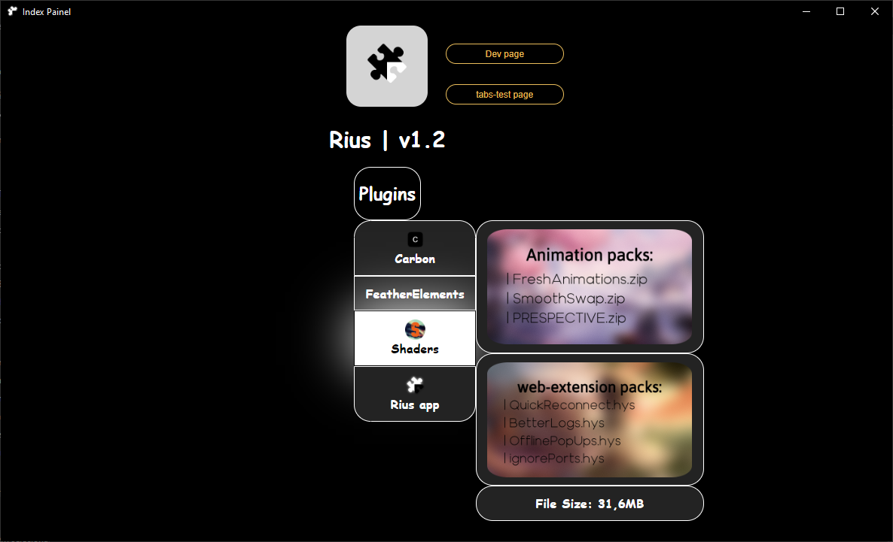

About RiusBrowser
An experimental browser project created by UmaEra, developed after the 5th month of development of the SimplyPrivate Browser. The vision was to create something unique that could save the complete website state (images, structure, and scripts) whenever the user wants, allowing them to revisit websites in their exact previous state.
Current Status: The project was put to the side, but not officially abandoned.
Created
March 2024
Developer
UmaEra
Project Type
Experimental Browser
Fun Fact: This browser received "plugins" and "webpacks" features before SimplyPrivate Browser did.
Screenshots

Main Browser Interface

Plugin Management System
Press SPACE to open in new tab & anywhere else to close